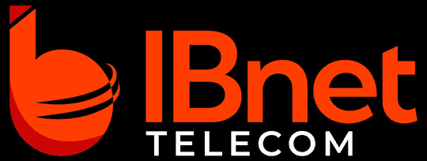

Bem-vindo
Usuário
Senha
Usuário ou senha incorretos.
Entrar
Esqueceu a senha?
Recuperar acesso
Recuperar Acesso
Informe seu usuário e enviaremos a senha para o e-mail cadastrado.
Usuário
Cancelar
Enviar
Sugestões & Bugs
×
Nova
Ver Todas
Tipo
💡 Sugestão de Melhoria
🐛 Reportar Erro
Título
Detalhes (opcional)
Fechar
Registrar
Dashboard Comercial
COMERCIAL
×
Digite para buscar…
Busca em Operações & Suporte ·
⌘K
/
Ctrl+K
·
Esc
fecha
Notificações
Limpar tudo
Nenhuma notificação.
Claro
Sugestões
Sair
Olá! 👋
Aqui está o resumo da plataforma —
Ativações Recentes
Ver tudo →
Carregando…
Tickets em Aberto
Ver tudo →
Carregando…
Estoque de Insumos
Gerenciar →
Carregando…